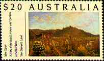

The picture on the right shows an impressive painting which hangs in the Bishop's Palace in Chur. The artistic work originates from Gabriel Dreher, who was born around 1580. The painting gains a particular importance because the Virgin Mary and the infant Jesus are framed by the two national patron saints of Liechtenstein.
The image of the girl, covering her eyes, is taken from the E. Baj - FDC, Liechtenstein - 1997 and perfectly expresses my feelings concerning the face value of this stamp (issued on the 2nd of June, 1997). Let's make a small calculation for the amount to be paid by collectors of Liechtenstein stamps, Paintings on Stamps, Religion on Stamps or other collectors:
- One stamp: CHF 20.00 (CHF is the abbreviation for the Swiss Franc, currency used also in Liechtenstein)
- The S/S (4 stamps): CHF 80.00
- The FDC (rounded): CHF 20.00
- The Maximum Card (rounded): CHF 20.00
Total: CHF 140.00 = US$ 93.00 US. Not bad for a single issue, isn't it? Of course, we are free to buy it or not, but... I did it (partially), not without a lot of hesitations, because the same money buys a lot of interesting, common stamps or even some scarce ones.
Of course, each vendor have the right to decide freely the prices of its products. But we should not forget that presently the right to issue stamps is normally granted to a single company, stately owned, and that we have for the moment only two possibilities:
1. To ask that the prices should not be
exaggerated (what I do in the present article)
2. To spread the idea that the free market forces should be left to enter the competition
(for our money) also in the domain of postal services. In this respect please read my
article: Stamps Without Face Value
|
This is a beautiful painting, issued by the Australian Postal Administration. But why such a high face value of |
 |
Please send me any information concerning issues with high face values, including scanned images when possible, together with your comments. The best will be published, mentioning the author's names. Thanks!
A comment from Australia: Many parcels sent overseas require quite a bit of postage, but I think one of the main reasons for a $20 stamp is that we can send our tax returns to the post office with a attached $20 stamp and have them processed quicker than sending them directly to the tax office. I.e. we are paying $20 to send a 45 cent envelope, but are also paying for the processing of it. Lydia Heap.